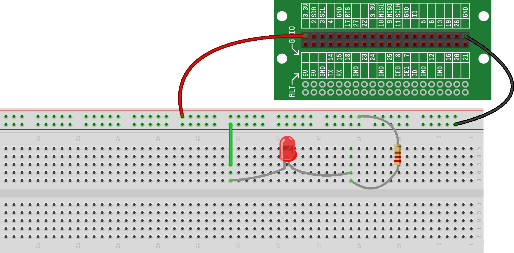

Ohm's law, discussed in , gives the relationship between voltage,
current and resistance. In this project, we'll test it. Specifically, we'll take our LED
circuit:

and we'll adjust the voltage and resistance to see how it affects the
current.
A quick reminder about how LEDs work:
-
Ideally, LEDs act simply as a wire that lights up if there is current
running through it. But there's an important point: the more current
that runs through the LED, the brighter it gets (up to a point - too
much current, and it will break).
-
In addition, the current thought an LED will only flow in one direction,
which is the direction of the arrow (we saw this was true in , when we flipped the LED backwards and saw that it
didn't light up). In this project, we'll only be running the current in
one direction (because we do want it to light up!).
And remember, Ohm's law is:
Voltage = Current · Resistance
which means that:
-
For a given resistance, if we double the voltage the current will double.
And,
if the current doubles in our circuit above, the LED will be brighter.
-
Alternatively, it means that for a given voltage, if you double the resistance, the current will
be cut in half.
And,
if the current is halved in our circuit above, the LED will be dimmer.
To build this circuit, you'll build two identical LED circuits. Then,
we'll experiment with changing the voltage and resistance.
Build two identical LED circuits.
Build two LED circuits that are equivalent to the circuits we've previously built. Both LED circuits
will use the 100 ohm resistor:

Both LEDs should be just as bright as they were before.
Change the resistor.
For one of the circuits (we've chosen the circuit on the right in the diagram below), change
the resistor from 100 ohms to 470 ohms:
Increasing the resistance will decrease the current, which makes the LED
dimmer.
Change the voltage.
First, change the resistor back to 100 ohms so you have two identical circuits again. Then,
for one of the circuits (we've chosen the circuit on the right in the diagram below), change the
voltage from 3.3V to 5V (shown labeled on the Lid Connector board).
Increasing the voltage will increase the current, which makes the LED
brighter.
The Your First Circuit RaspberrySTEM Cell includes three
resistors of different values (100 ohms, 470 ohms, and 1000 ohms). With the
two voltage levels (3.3V and 5V) and the three resistors, there are 6 possible
combinations of voltage/resistance.
-
Try all six combinations and verify that for each
voltage, increasing the resistance does decrease the current.
-
Which voltage/resistance combination gives the brightest LED? The
dimmest?
-
Which is brighter: the LED using 470 ohms with 5V or using 100 ohms
with 3.3V?